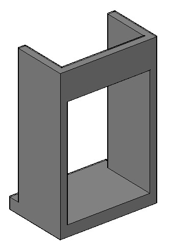

в Бресте:8 (0162) 53 – 16 – 68, 8 (029) 507 – 41 – 20 МТС
в Чернавчицах:8 (0162) 94-54-32, 8 (033) 644 - 54 – 32 МТС
|
Узнать актуальные цены и заказать продукцию можно по телефонам: в Бресте:8 (0162) 53 – 16 – 68, 8 (029) 507 – 41 – 20 МТС в Чернавчицах:8 (0162) 94-54-32, 8 (033) 644 - 54 – 32 МТС |
|  |
| Б 20-15-20-Н СТБ |
| Б 25-20-20-Н СТБ |
| Б 25-15-20-Н СТБ |